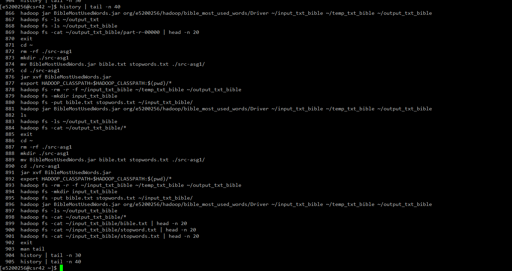

bible.txt and stopwords.txt
csr42 side
for Assignment 1 - Bible Word Count
of course COMP4057 Distributed and Cloud Computing
by Poon Chun Yiu (15200256)
9 April 2017
bible.txt and stopwords.txtcsr42 sideDriver contains the instructions for Hadoop to perform the jobs accordingly.Driver will start the job for Counter.Job job1 = Job.getInstance(conf, "BibleMostUsedWords: Counter");
FileInputFormat.addInputPath(job1, new Path(rArgs[0]));
FileOutputFormat.setOutputPath(job1, new Path(rArgs[1]));
job1.setJarByClass(Counter.class);
job1.setMapOutputKeyClass(Text.class);
job1.setMapOutputValueClass(IntWritable.class);
job1.setOutputKeyClass(Text.class);
job1.setOutputValueClass(IntWritable.class);
job1.setMapperClass(Counter.CountMapper.class);
job1.setReducerClass(Counter.CountReducer.class);
if (!job1.waitForCompletion(true)) {
System.exit(1);
return;
}
Counter will first check if the Tab-Separated Values (but in *.txt) has exactly:
1 column for stop words, and;2 columns for the bible data...And to let all text, except non alphabetical characters (i.e. regex=[^A-Za-z]), with its lower case,
to be emitted by the mapper.
StringTokenizer st = new StringTokenizer(value.toString(), "\t"); // tab separated
if (st.countTokens() == 2) {
// bible
st.nextToken(); // omit (1)
StringTokenizer stWords = new StringTokenizer(st.nextToken()); // space separated
while (stWords.hasMoreTokens()) {
String strWord = stWords.nextToken()
.replaceAll("[^A-Za-z']", "")
.toLowerCase()
.trim();
if (strWord.length() == 0) {
continue;
}
word.set(strWord);
context.write(word, positive);
}
} else if (st.countTokens() == 1) {
// stopwords
String strWord = st.nextToken().toLowerCase();
word.set(strWord);
context.write(word, negative);
}
bible.txt will emit value of 1, and for words in file stopwords.txt emitting -1.1) of words in bible. -1) is found,
the reducer will skip the current word, which makes the word not to be shown on the (intermediate) output file.int sum = 0;
for (IntWritable val : values) {
if (val.get() < 0) {
return;
}
sum += val.get();``````
}
result.set(sum);
context.write(key, result);
Driver will then execute another job to sort and trim the counts of words.1.Job job2 = Job.getInstance(conf, "BibleMostUsedWords: First10");
FileInputFormat.addInputPath(job2, new Path(rArgs[1]));
FileOutputFormat.setOutputPath(job2, new Path(rArgs[2]));
job2.setJarByClass(SwappedHead.class);
job2.setNumReduceTasks(1);
job2.setMapOutputKeyClass(IntWritable.class);
job2.setMapOutputValueClass(Text.class);
job2.setOutputKeyClass(Text.class);
job2.setOutputValueClass(IntWritable.class);
job2.setSortComparatorClass(SwappedHead.SHReverseComparator.class);
job2.setMapperClass(SwappedHead.SHMapper.class);
job2.setReducerClass(SwappedHead.SHReducer.class);
System.exit(job2.waitForCompletion(true) ? 0 : 1);
SwappedHead will invert the Key-Value pair and emit it.StringTokenizer st = new StringTokenizer(value.toString());
word.set(st.nextToken());
number.set(Integer.valueOf(st.nextToken()));
context.write(number, word);
IntWritable comparator to make the sorting produces a descending list.@Override
public int compare(byte[] b1, int s1, int l1, byte[] b2, int s2, int l2) {
return -1 * super.compare(b1, s1, l1, b2, s2, l2);
}
SHReducer is set to trim the remaining items not to be emitted after 10 emits.private int i = 0;
@Override
protected void reduce(IntWritable value, Iterable<Text> keys, Context context) throws IOException, InterruptedException {
if (i >= 10) {
return;
}
for (Text k: keys) {
if (i++ >= 10) {
break;
}
context.write(k, value);
}
}